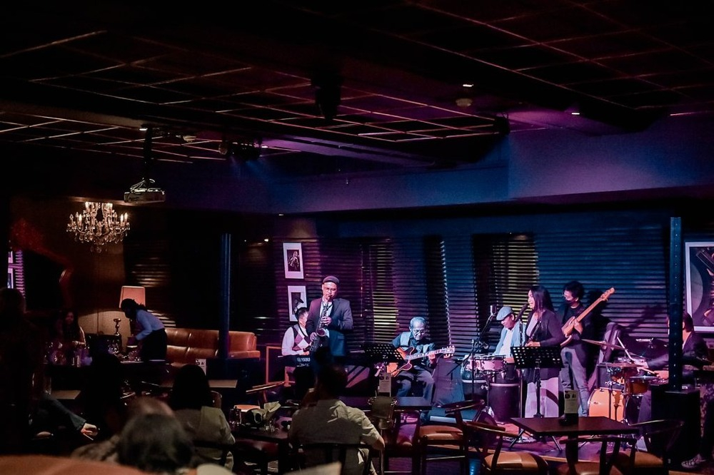

OUR RESTAURANT
Foto Restoran
Suasana yang nyaman untuk menikmati makanan bersama.


TENTANG KAMI
Mengenal lebih dekat Dapur Senja, tempat kami menghadirkan hidangan lezat, suasana hangat, dan pengalaman makan yang berkesan.
OUR STORY
Dapur Senja hadir dari kecintaan terhadap kuliner dan keinginan untuk menciptakan tempat makan yang nyaman untuk semua kalangan.
Sejak berdiri pada tahun 2018, Dapur Senja terus berkembang dengan menghadirkan berbagai hidangan pilihan dan menjaga kualitas rasa serta pelayanan. Bagi kami, setiap hidangan bukan hanya tentang makanan, tetapi juga tentang menciptakan momen hangat bersama orang-orang terdekat.
Awal berdirinya Dapur Senja
OUR VALUES
Menjadi restoran yang dikenal karena cita rasa, kualitas makanan, dan pelayanan yang baik.
Menyajikan makanan berkualitas, menjaga kebersihan, serta memberikan pelayanan yang ramah kepada pelanggan.
OUR RESTAURANT

OUR TEAM

Head Chef
Kitchen Team
Restaurant Manager